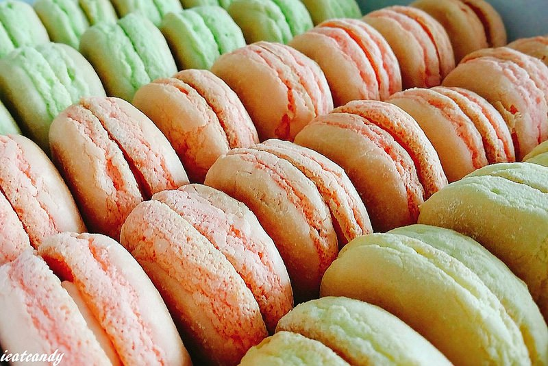

牛粒，也就是台式馬卡龍，也有人稱蛋黃小西點，從小我就超級愛吃，到現在還是超級喜愛
就算是法式馬卡龍也無法取代台式馬卡龍在我味蕾中的地位~~~
最喜歡它外酥內軟的口感，配上濃濃的蛋香，一次我都可以嗑掉一整包!!!
其實它的材料很簡單，作法不難，但要做到美美的賣相就是一大挑戰了，關鍵在於麵糊的打發及攪拌的程度，
這邊就用神老師的食譜來跟大家分享分享~~
 連結首頁 連結第1頁 連結第2頁 連結第3頁 連結第4頁